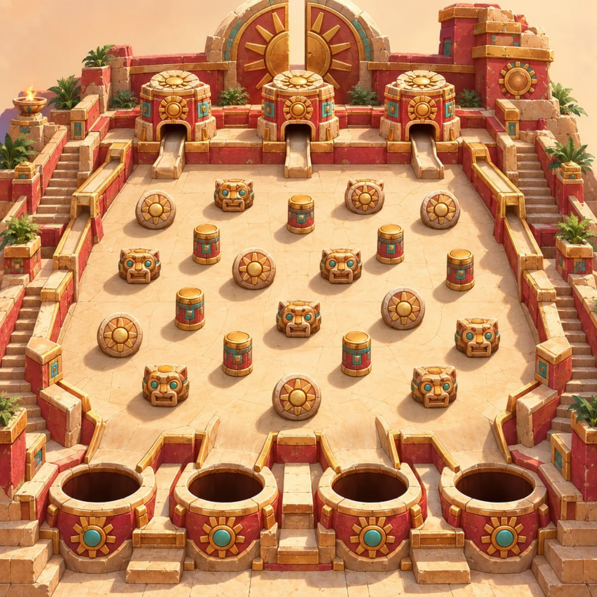
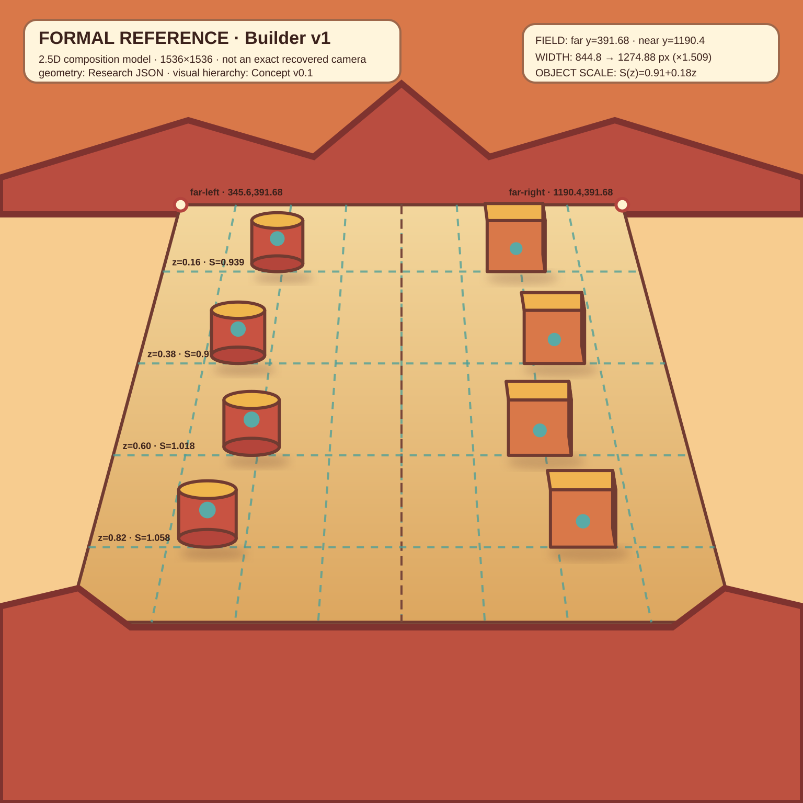
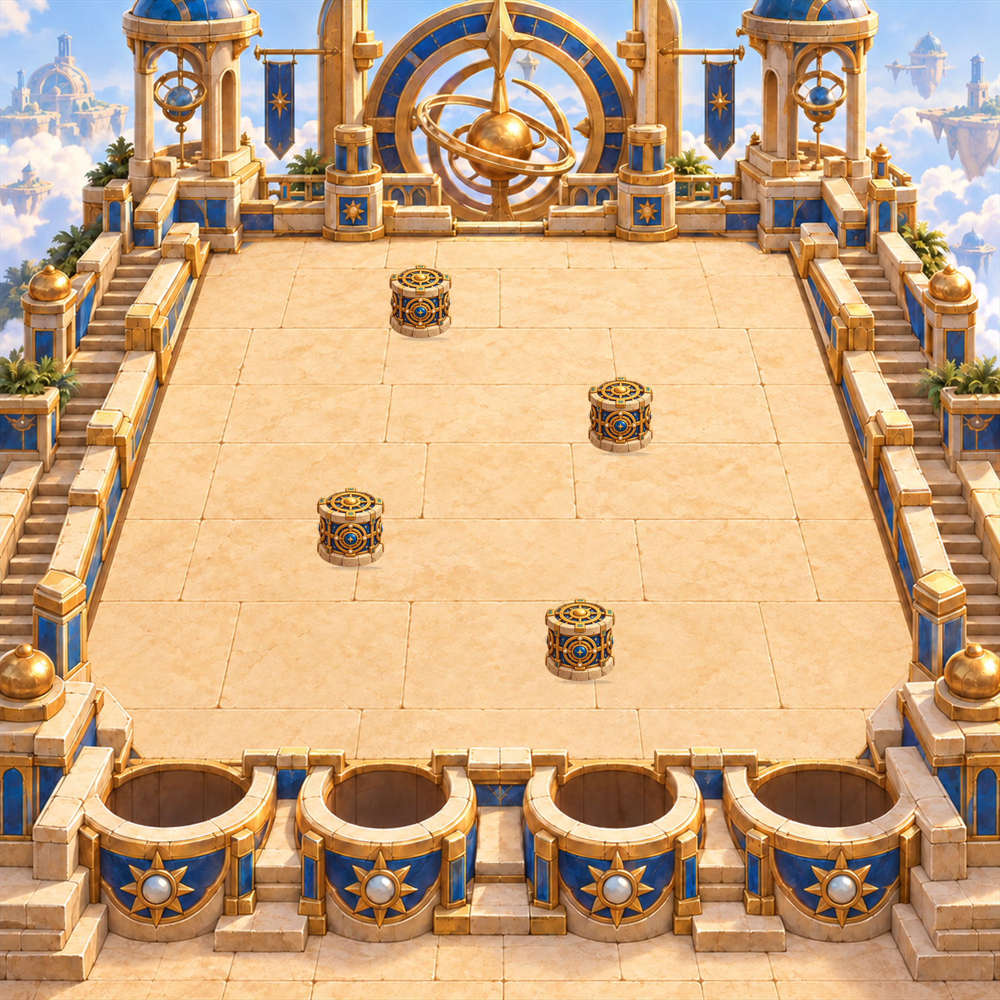
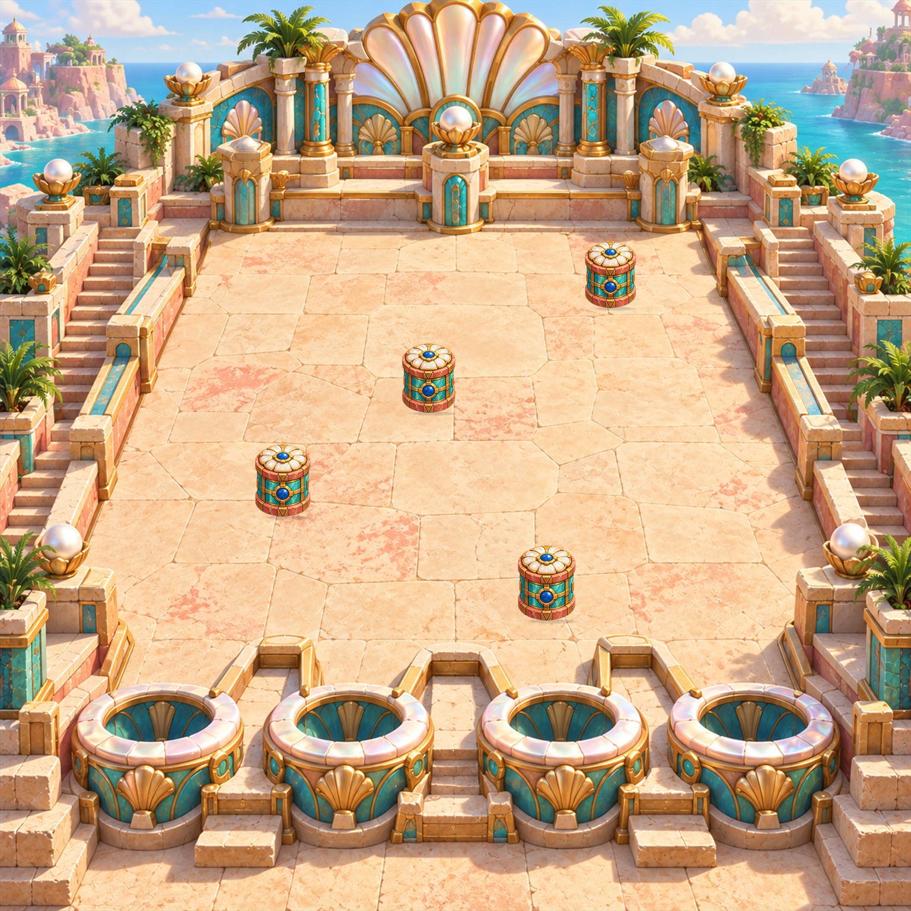
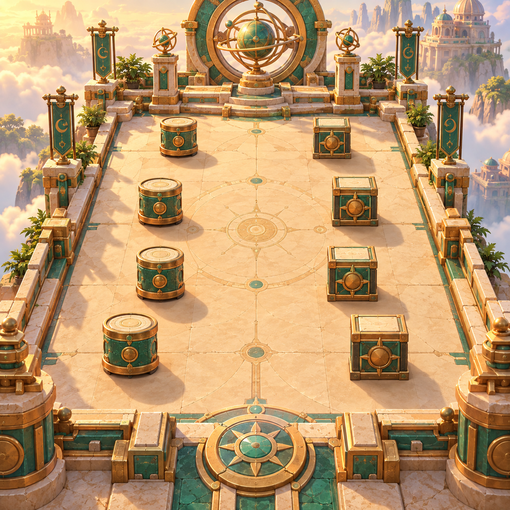
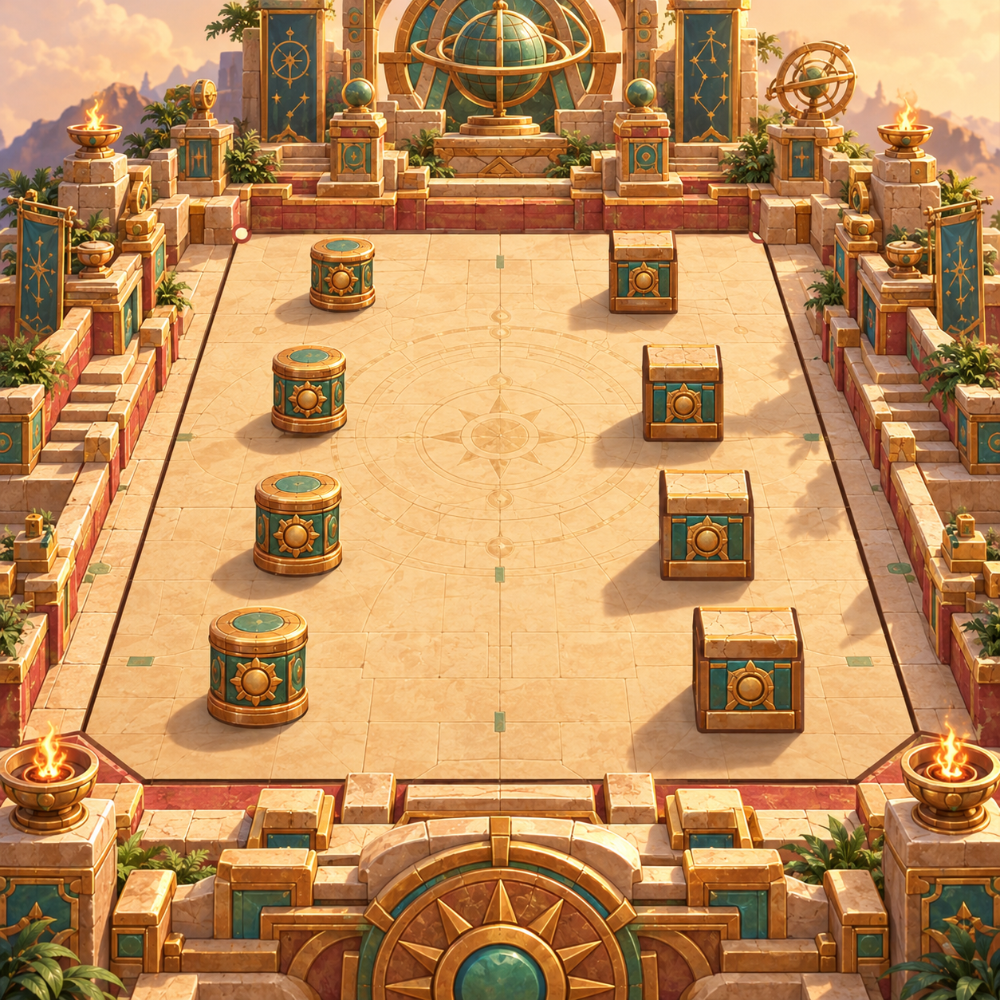
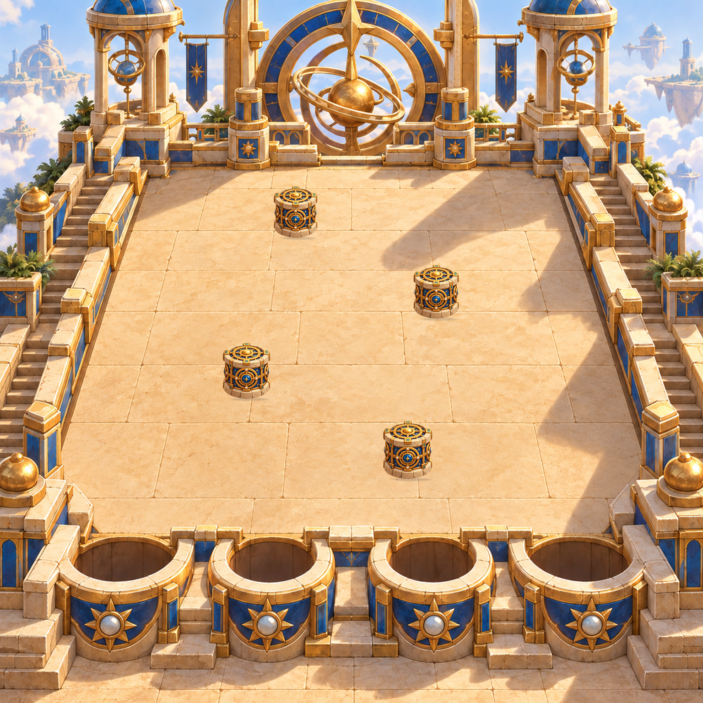

Исходник и формальная модель
Одинаковые рамки, без crop и независимого растяжения осей.


Проверенная QA серия F1–F4
Четыре board-owned набора компонентов, frozen layouts и побайтово проверяемая сборка.




Сохранённые неудачи
Ровно три существенных состояния; удачная выборка не скрывает историю метода.


